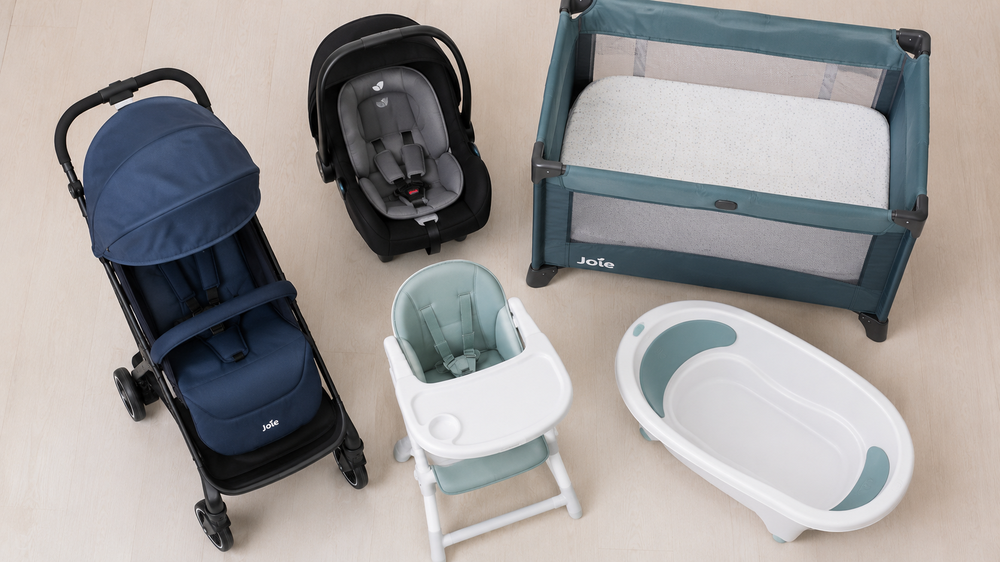
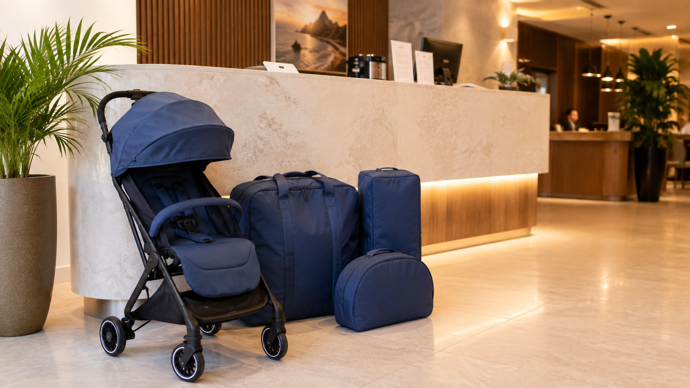

Where to rent a baby or child stroller in Rio de Janeiro — complete guide for tourists
Anyone planning a trip to Rio with a baby or child eventually reaches the same conclusion: bringing a stroller from home is more trouble than it’s worth. It’s not impossible — it just rarely makes sense once you think it through. This guide explains why, and what to do instead.
Why you don’t need to bring your stroller from home
Travelling light is travelling better
There’s a fairly brutal maths to travelling with a baby or child. The more gear you bring, the more energy you spend managing the gear — and the less you have left for the actual trip. A stroller in the hold, a car seat taking up the back seat, a portable crib that takes forty minutes to reassemble inside a hotel room.
In Rio, where the plan is to hit the beach, walk along the boardwalk, squeeze into a restaurant in Ipanema that barely fits four people — this matters. Literally and figuratively.
The problem with flying with a stroller
Many airlines allow strollers as checked baggage at no extra charge. That solves the cost side, but not the rest of the problem.
The stroller goes in the hold. Sometimes it arrives dented. Sometimes it arrives after your suitcase. Sometimes it arrives on the next flight — and you’re standing in the arrivals hall holding the baby or child, waiting for something you didn’t really want to bring in the first place. If it’s an expensive stroller, you spend the whole trip hoping nobody threw it upside down in the cargo bay. If you packed a cheap one to avoid the risk, that’s a different problem.
Either way, the maths doesn’t quite work.
The solution most tourists don’t know about
Rental Turtle delivers sanitised baby equipment directly to your hotel or Airbnb in the Zona Sul of Rio de Janeiro. You arrive with your suitcase. The stroller is already in the room.
When you leave, we collect it.

What you can rent in Rio de Janeiro
It’s not just strollers. These are the five types of equipment available for hire.
Strollers
The models available are lightweight and compact — chosen specifically to work in the real Rio, not some imaginary city with flat pavements. They fold one-handed, fit in the trunk of any rideshare car without negotiation, and handle the uneven cobblestones of Ipanema without jamming every two metres.
Car seats and infant carriers
All models are INMETRO-certified — Brazil’s mandatory safety certification for child car seats. For tourists arriving from abroad, this matters more than it might seem. A standard car rental company won’t always give you the same guarantee with the same clarity. With Rental Turtle, you know exactly what you’re getting.
Portable crib
There are good reasons not to trust hotel cribs. Size, condition, hygiene — the variation is significant. The portable crib from Rental Turtle arrives sanitised and ready to assemble. No guesswork.
High chair
For babies or young children on solid food, a proper high chair avoids the improvisation that every parent knows well — baby or child on your lap during dinner, pillows as makeshift seating, five minutes of engineering before every meal. We deliver it alongside your other equipment.
Baby or child bath
Very few hotels provide a proper baby bath. Asking the hotel usually results in a generic inflatable one, if anything at all. We deliver a real baby bath, sanitised, the right size for your baby or child.

Compact strollers — perfect for Uber and taxis in Rio
The reality of Copacabana and Ipanema streets
Rio was not designed with baby strollers in mind. The pavements in Ipanema have that wave-patterned Portuguese cobblestone surface that looks beautiful in photographs and is a practical nightmare — particularly with small wheels and a baby or child on board. Copacabana is more manageable along the seafront, but foot traffic is heavy and space inside restaurants and shops is tight.
Beyond the pavements, there’s the rideshare problem. The standard fleet in Rio is mostly small hatchbacks and compact saloons. A large travel system — any two-piece stroller, any full-size frame — does not fit in the trunk of a compact car without serious manoeuvring.
Why stroller size matters in Rio
A large stroller works brilliantly in cities with spacious metro cars, wide shopping malls, and flat sidewalks. Rio is not particularly any of those things.
What you actually want here is something that:
- Folds one-handed while you’re holding the baby or child with the other
- Fits in the trunk without the driver having to rearrange anyone’s luggage
- Gets through a restaurant door in Ipanema without rearranging half the dining room
Rental Turtle’s strollers were selected with exactly that in mind. We don’t offer the larger models because they simply don’t make sense for anyone spending a week in the Zona Sul.
Compact models that fit in any car trunk
In practice: you call the Uber, the stroller goes in the trunk folded, the baby or child goes in the seat or on your lap — and nobody needs to hope the driver happened to choose an SUV that day.

How delivery works — straight to your hotel or Airbnb
We deliver where you’re staying
You provide your accommodation address when booking. We deliver there — at the hotel reception, the building entrance, or the front door of your Airbnb. The delivery and collection fee is R$ 50, charged once for the entire rental period, regardless of how many items you hire.
No need to travel anywhere, arrange a meeting point, or hire a car to pick anything up.
Neighbourhoods covered in Zona Sul
We cover Copacabana, Ipanema, Leblon, Botafogo, Flamengo, Laranjeiras, Gloria, Leme, Arpoador, and nearby areas. If you’re not sure whether your address falls within our coverage zone, just ask before confirming your booking.
Delivery and collection times
Times are arranged at the point of booking, around your check-in and check-out schedule. There’s no fixed delivery window you need to fit your plans around — the equipment is there when you need it.

How much does it cost? Clear pricing, no surprises
Daily and weekly rates
Prices are listed directly on the Rental Turtle website, by product and by rental period. There’s no “contact us for a quote”, no rate that changes depending on who picks up. You see the price, calculate your total for your stay, and book.
How the security deposit works — and how it’s returned
Rental Turtle charges a security deposit of R$ 150, declared separately from the rental cost. It’s a guarantee on the equipment — not a fee, not revenue. It’s returned in full when the equipment comes back in good condition.
The deposit is listed separately from the rental cost so you always know exactly what you’re paying for the actual hire and what’s refundable.
No hidden charges
What you see on the website is what you pay: the rental cost for your period, plus R$ 50 for delivery and collection, plus the R$ 150 refundable deposit. There are no hygiene fees, insurance fees, processing fees, or anything else that appears only at checkout.
No CPF required — designed for tourists
Why most services ask for a CPF — and we don’t
In Brazil, many rental services require a CPF (Brazil’s individual tax registration number) to process a booking. Sometimes it’s a system requirement, sometimes it’s protocol, sometimes it’s simply how things have always been done. For international tourists who don’t have a CPF — and simply can’t get one for a one-week holiday — this is a genuine barrier.
Rental Turtle does not require a CPF. The service was built from the start for people who are passing through, and nobody passing through should have to deal with tax registration paperwork to hire a stroller for three days.
What you need to book
To make a reservation, you provide: your full name, contact details, accommodation address, delivery and collection dates, and preferred payment method. That’s it.
No CPF. No proof of address. No additional documentation.
Same process for everyone
Whether you’re coming from the UK, the US, Argentina, or anywhere else — the process is identical. You book, confirm payment, and the equipment arrives at your hotel. Where you’re from doesn’t change anything.
Payment methods — international cards, PayPal, Wise
Accepted payment options
- PayPal — international transfer, no Brazilian bank account needed
- Wise — in your local currency or Brazilian reais
- Revolut — for those who use the European payments app
- Visa and Mastercard — in person at delivery, via card terminal
- Pix — for those with a Brazilian bank account
How to pay without a Brazilian bank account
PayPal, Wise, and Revolut work entirely without a Brazilian account. You pay from your account abroad, we receive it here. There’s no exchange rate to calculate on our end and no extra steps on yours — it’s a standard transfer through platforms you already use.
Payment confirmed before delivery
You receive an email confirmation of payment before the equipment leaves for delivery. The email includes a full summary of your booking: what was hired, the amounts, the dates, and the delivery address. Nothing is delivered without that confirmation — which also means you don’t pay anything without having your order confirmed in writing first.
How to book — confirmation within hours
Choose your equipment and dates
On the Rental Turtle website, select the products you need and your travel dates. Prices update in real time, by product and by rental period.
Submit your booking form
Fill in the booking form with your accommodation address, preferred delivery time, and payment method. It takes under two minutes.
Fast confirmation, no waiting
Rental Turtle confirms bookings within a few hours — usually the same day for bookings made in advance. For last-minute requests, we do our best to respond as quickly as possible. You receive a confirmation email with all the details, and only then move on to payment.